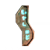
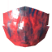

La Reine : emplacement, invocation et astuces
La Reine : emplacement, invocation et astuces
La Reine est la mère des fouineurs et le sixième boss. Elle vit au fond de la Citadelle infestée, dans les Terres brumeuses, et ne se bat jamais seule : sa progéniture éclot sans arrêt autour de toi. Une bonne préparation et le contrôle de ses rejetons décident du combat.
| Biome | Terres brumeuses |
|---|---|
| Vie | 12 500 |
| Objet d'invocation |  1 × Brise-sceau |
| Faible contre | – |
| Résistant à | Perforant |
| Insensible à | Esprit |
| Butin |  5 × Carapace majestueuse |
| Pouvoir de Déchu | L'Eitr se régénère deux fois plus vite, la discrétion ne coûte plus d'endurance et tu gagnes 50 % de résistance au poison. |
La Reine : afficher les autels sur la carte
Comment trouver La Reine
La Reine ne s'invoque pas. Elle attend à l'intérieur de la Citadelle infestée, un immense bâtiment scellé des Terres brumeuses. Des pierres runiques rouges dans les Mines infestées marquent la citadelle sur ta carte.
La porte ne s'ouvre qu'avec le Brise-sceau. Tu le fabriques à la Table de galdr avec 9 Fragments de brise-sceau, que tu trouves dans les Mines infestées. Pour l'affronter à nouveau plus tard, dépose 3 Trophées de soldat fouineur sur l'autel à l'intérieur.
Préparation
- Porte l'armure en carapace améliorée pour la mêlée, ou la Robe d'Eitr tissé si tu combats à la magie.
- Elle résiste aux dégâts perforants. Utilise des armes coupantes ou contondantes comme Marchebrume, Krom ou le Démolisseur. Les arcs et les lances font peu de dégâts.
- La magie est très forte ici : le Bâton des braises nettoie sa progéniture, le Bâton de protection protège le groupe et l'Éveil des morts distrait les ennemis.
- Bois de l'Hydromel de résistance au poison avant d'entrer, et prends des Hydromels extrêmement revigorants, des hydromels d'endurance et des hydromels d'Eitr.
- Mange les meilleurs plats des Terres brumeuses. Pour les mages, au moins un aliment qui donne de l'Eitr est obligatoire.
- Il n'y a pas de brume dans la citadelle, mais prends ta Lumière de feu-follet pour le trajet. Une Cape de plumes te permet de sauter sans danger depuis les étages.
- Tu peux construire dans la citadelle. Une Table de fabrication, un portail juste devant la porte et quelques murs en pierre pour te mettre à couvert aident beaucoup.
Attaques
- Coups de griffes et ruée : de larges balayages avec ses pattes avant et une charge en rampant. Esquive sur le côté ou bloque avec un bouclier solide.
- Morsure : un bond droit devant, avec de lourds dégâts perforants et de poison. Ne reste pas devant sa tête.
- Frappe au sol : elle se cabre et plante ses quatre bras dans le sol, touchant tout ce qui l'entoure. Recule quand elle se dresse.
- Crachat : plusieurs projectiles de poison qui explosent et libèrent des Jeunes fouineurs.
- Appel : elle hurle et invoque des fouineurs et des jeunes fouineurs.
- Enfouissement : elle s'enfonce dans le sol et ressurgit ailleurs dans la salle.
Trucs et astuces
- Tue sa progéniture en permanence. Une douzaine de petits fouineurs font plus de dégâts que la Reine elle-même. Les attaques de zone comme celles du Démolisseur ou du Bâton des braises sont idéales.
- Sers-toi des escaliers et des étages de la citadelle. Elle est rapide à découvert mais lente sur les rampes, ce qui te laisse le temps de te soigner et de récupérer de l'endurance.
- Toutes ses attaques de mêlée te projettent en arrière. Ne reste pas dos aux murs ni au bord du vide.
- En groupe, un joueur équipé d'un écu retient son attention pendant que les autres s'occupent des rejetons et attaquent par-derrière.
- Le pouvoir de Masse-d'Os est excellent en mêlée. Pour la revanche, les mages prennent le pouvoir de la Reine elle-même, ou celui de Yagluth pour plus de dégâts.
- Si tu meurs, ta pierre tombale reste dans la salle. Un portail juste devant la porte raccourcit le trajet pour récupérer tes affaires.
Récompense
La Reine lâche 5 Carapaces majestueuses et son trophée. La carapace sert à construire la Presse artisanale, nécessaire pour l'équipement et les navires qui t'emmènent vers les Terres de cendres.
Après sa défaite, Haldor vend les Poches approfondies, encore une rangée d'inventaire, et la Sorcière du marécage ajoute l'épice des Terres brumeuses.
Son Pouvoir de Déchu double la régénération de l'Eitr. Pour les builds magie, c'est le meilleur pouvoir du jeu.